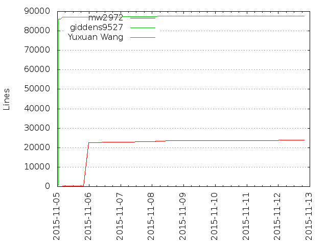
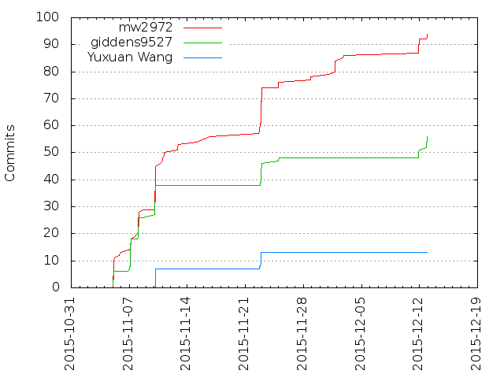

Authors
| Author | Commits (%) | + lines | - lines | First commit | Last commit | Age | Active days | # by commits |
|---|
| mw2972 | 59 (56.19%) | 24413 | 133055 | 2015-11-04 | 2015-11-22 | 17 days, 15:52:34 | 12 | 1 |
| giddens9527 | 38 (36.19%) | 87618 | 85249 | 2015-11-04 | 2015-11-09 | 5 days, 4:12:43 | 4 | 2 |
| Yuxuan Wang | 8 (7.62%) | 124 | 4 | 2015-11-09 | 2015-11-22 | 12 days, 13:05:17 | 2 | 3 |


| Month | Author | Commits (%) | Next top 5 | Number of authors |
|---|
| 2015-11 | mw2972 | 59 (56.19% of 105) | giddens9527, Yuxuan Wang | 3 |
| Year | Author | Commits (%) | Next top 5 | Number of authors |
|---|
| 2015 | mw2972 | 59 (56.19% of 105) | giddens9527, Yuxuan Wang | 3 |
| Domains | Total (%) |
|---|
| columbia.edu | 67 (63.81%) |
|---|
| gmail.com | 38 (36.19%) |
|---|